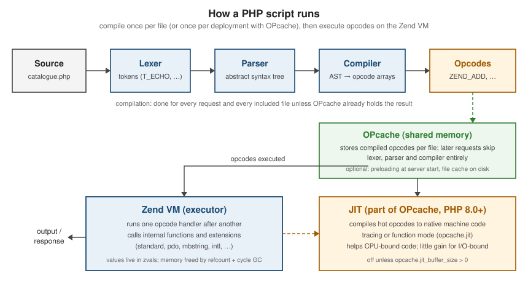

OPcache, JIT and Performance
|
This content was generated with the assistance of AI and should be verified against the official documentation before being relied on in production. |
This page is written against PHP 8.5, checked on 2026-10-05. Every timing on it was measured with PHP 8.5.11 in the
official php:8.5-cli Docker image on one machine; the absolute numbers will differ on yours, but the ratios are what
matter. PHP compiles every script to opcodes before running it (see
Getting Started). OPcache keeps those opcodes in shared memory
so later requests skip compilation, and the JIT can compile hot opcodes further, to machine code.

OPcache
Since PHP 8.5 OPcache is always compiled into the PHP binary and always loaded; opcache.enable (default 1) and
opcache.enable_cli (default 0) still decide whether it is used. A zend_extension=opcache line in an old
php.ini now only emits a warning. Before 8.5 it was an optional extension that distributions sometimes left out.
The cache lives in shared memory owned by the PHP-FPM (or Apache, or FrankenPHP) master process, so all workers share
it. The CLI has no long-lived master: with opcache.enable_cli=1 each php command gets a private cache that
disappears when it exits, which is why OPcache is off for the CLI by default.
; production: conf.d/10-opcache.ini
opcache.enable=1
opcache.memory_consumption=256 ; MB of shared memory for opcodes (default 128)
opcache.interned_strings_buffer=16 ; MB for interned strings (default 8)
opcache.max_accelerated_files=20000 ; at least the number of PHP files, vendor/ included (default 10000)
opcache.validate_timestamps=0 ; never check files for changes: reload PHP-FPM on every deployopcache.validate_timestamps=1 (the default) makes OPcache check each file’s modification time, at most every
opcache.revalidate_freq seconds (default 2). That is what you want in development, where files change all the time.
In production, code changes only on deploy, so turn the checks off and clear the cache as part of the deploy (reload
PHP-FPM, or call opcache_reset() from a request served by the same pool). Deploying into a new directory and
switching a symlink makes the change atomic; with validate_timestamps=0, old opcodes would otherwise keep running.
opcache_get_status() reports memory, hit rate and JIT state. It returns false where OPcache is disabled, such as
the default CLI.
<?php
$status = opcache_get_status(include_scripts: false);
if ($status === false) {
exit("OPcache is not enabled for this SAPI\n");
}
$memory = $status['memory_usage'];
$stats = $status['opcache_statistics'];
printf("enabled: %s, cache full: %s\n", var_export($status['opcache_enabled'], true), var_export($status['cache_full'], true));
printf("memory: %.1f MB used, %.1f MB free\n", $memory['used_memory'] / 1048576, $memory['free_memory'] / 1048576);
printf("scripts: %d cached (max %d), hit rate %.1f %%\n", $stats['num_cached_scripts'], $stats['max_cached_keys'], $stats['opcache_hit_rate']);
printf("jit: %s\n", $status['jit']['on'] ? 'on' : 'off');
// php status.php -> OPcache is not enabled for this SAPI
// php -d opcache.enable_cli=1 status.php -> enabled: true, cache full: false
// memory: 8.7 MB used, 119.3 MB free ...Source: opcache_get_status and opcache_reset
Expose this only behind authentication, in the web SAPI (the numbers that matter belong to the PHP-FPM pool, not to a
CLI process). A cache_full of true, or a falling hit rate, means memory_consumption or max_accelerated_files
is too small.
File cache
opcache.file_cache=/path additionally writes compiled scripts to disk as .bin files, so a restarted server or a
fresh CLI process starts warm. opcache.file_cache_only=1 uses only the disk cache, for environments without shared
memory. PHP 8.5 added opcache.file_cache_read_only, which lets a container image ship a cache built at image-build
time on a read-only file system, and opcache_is_script_cached_in_file_cache():
<?php
// php -d opcache.enable_cli=1 -d opcache.file_cache=/tmp/oc fc.php
require __DIR__ . '/src/FineCalculator.php';
$file = __DIR__ . '/src/FineCalculator.php';
var_dump(opcache_is_script_cached($file)); // bool(true): in shared memory
var_dump(opcache_is_script_cached_in_file_cache($file)); // bool(true): /tmp/oc/<system id>/.../FineCalculator.php.binPreloading
Preloading (7.4) runs one script when the server starts. Every class and function it compiles stays in memory for
the server’s lifetime, linked and ready, so requests never load or autoload them. The script calls
opcache_compile_file() (or requires files). A PHP-FPM master that starts as root must name an unprivileged user
with opcache.preload_user.
<?php
// preload.php -- php.ini: opcache.preload=/app/preload.php and opcache.preload_user=www-data
foreach (glob(__DIR__ . '/src/*.php') as $file) {
opcache_compile_file($file);
}
// Any later script, with no require and no autoloader:
// var_dump(class_exists(FineCalculator::class, autoload: false)); // bool(true)
// opcache_get_status(false)['preload_statistics']['classes'] // ['FineCalculator']Source: PHP Manual — Preloading and opcache.preload_user
The trade-off is that preloaded code can only change with a server restart. The gain is usually a few percent, mostly
for frameworks with many small files; measure before keeping it. Composer’s optimised autoloader
(composer dump-autoload --optimize --classmap-authoritative, see
Composer and Packages) gives part of the same benefit with
no restart constraint.
The JIT
The JIT (PHP 8.0) compiles opcodes to native machine code at run time. It is part of OPcache, so it needs
opcache.enable (and opcache.enable_cli on the command line), and it is disabled by default. Since 8.4 the default
is opcache.jit=disable with opcache.jit_buffer_size=64M. Before 8.4 the JIT was disabled through a zero buffer
size, so old guides that only set jit_buffer_size no longer turn it on.
opcache.jit |
Meaning |
|---|---|
|
Off, and cannot be enabled at run time |
|
Off, but can be switched on at run time with |
|
Profiles the running code and compiles hot paths (traces) across function boundaries: the recommended mode |
|
Compiles whole functions once they are hot; simpler, usually a little slower than tracing |
four digits ( |
Advanced: CPU flags, register allocation, trigger and optimisation level (CRTO) |
opcache.enable=1
opcache.jit=tracing
opcache.jit_buffer_size=64M ; machine-code buffer in shared memory (the default since 8.4)Source: opcache.jit and opcache.jit_buffer_size
When the JIT helps
The JIT speeds up code that spends its time in PHP opcodes: arithmetic, loops and recursion. It cannot speed up time
spent in internal C functions (json_encode(), preg_*, string and array functions), in the database, or waiting on
the network, which is where a typical web request spends most of its time. This benchmark compares both kinds of work:
<?php
declare(strict_types=1);
function fib(int $n): int
{
return $n < 2 ? $n : fib($n - 1) + fib($n - 2);
}
function mandel(int $size): int
{
$inside = 0;
for ($y = 0; $y < $size; $y++) {
for ($x = 0; $x < $size; $x++) {
$cr = 2.0 * $x / $size - 1.5;
$ci = 2.0 * $y / $size - 1.0;
$zr = $zi = 0.0;
$i = 0;
while ($i < 100 && $zr * $zr + $zi * $zi < 4.0) {
[$zr, $zi] = [$zr * $zr - $zi * $zi + $cr, 2.0 * $zr * $zi + $ci];
$i++;
}
$inside += $i === 100 ? 1 : 0;
}
}
return $inside;
}
$start = hrtime(true); // nanoseconds from a monotonic clock
$result = [fib(27), mandel(300)];
$ms = (hrtime(true) - $start) / 1e6;
printf("%s: %d %d in %.0f ms\n", ini_get('opcache.jit'), ...[...$result, $ms]);
// php -d opcache.enable_cli=1 -d opcache.jit=disable bench.php -> about 220 ms
// php -d opcache.enable_cli=1 -d opcache.jit=function bench.php -> about 110 ms
// php -d opcache.enable_cli=1 -d opcache.jit=tracing bench.php -> about 90 ms| Workload (PHP 8.5.11, best of five runs) | JIT disabled | Tracing JIT |
|---|---|---|
CPU-bound: recursion and floating-point loops (above) |
about 220 ms |
about 90 ms |
20,000 rounds of |
about 19 ms |
about 19 ms |
The CPU-bound code runs about 2.4 times faster; the code that spends its time in internal functions does not change.
For a typical Laravel request, the JIT changes little: queries, I/O and framework bootstrapping dominate. It pays off
for image processing, parsers, numeric work, long-running workers and tools such as static analysers. Turn it on,
measure your own workload, and keep it only if it helps. opcache_jit_blacklist() (8.4) excludes a function that
misbehaves or slows down under the JIT.
FFI
FFI (Foreign Function Interface, 7.4) calls functions in C shared libraries directly from PHP, without writing an
extension. FFI::cdef() takes C declarations and a library name, and returns an object whose methods are those
functions.
<?php
$libc = FFI::cdef(<<<'C'
size_t strlen(const char *s);
int abs(int j);
typedef struct { long quot; long rem; } ldiv_t;
ldiv_t ldiv(long numerator, long denominator);
C, 'libc.so.6');
var_dump($libc->strlen('Bookshelf')); // int(9)
var_dump($libc->abs(-42)); // int(42)
$r = $libc->ldiv(17, 5);
echo "{$r->quot} remainder {$r->rem}\n"; // 3 remainder 2
$buffer = $libc->new('char[16]'); // C memory owned by PHP; calling FFI::new() statically is deprecated (8.3)
FFI::memcpy($buffer, 'hello', 5);
var_dump(FFI::string($buffer, 5)); // string(5) "hello"Source: FFI::cdef, PHP Manual — FFI basic usage and FFI::new
FFI is an extension that must be installed (ext-ffi; the official Docker images need docker-php-ext-install ffi).
ffi.enable defaults to preload: the FFI API works on the CLI and in preloaded scripts, but not in ordinary web
requests, because a wrong C declaration can crash the process or corrupt memory. For web use, declare the bindings in
a preloaded file with FFI::scope(). FFI calls have their own overhead, so FFI is a way to reach a C library (a
machine-learning runtime, a system API), not a faster way to do work that PHP’s own functions already do.
Micro-optimisation myths
Old tutorials are full of rules that once saved microseconds, or never did. This script measures them with
hrtime():
<?php
declare(strict_types=1);
function bench(string $label, callable $fn, int $runs = 5): void
{
$best = PHP_INT_MAX;
for ($r = 0; $r < $runs; $r++) {
$start = hrtime(true);
$fn();
$best = min($best, hrtime(true) - $start); // keep the fastest run: the least noise
}
printf("%-28s %6.1f ms\n", $label, $best / 1e6);
}
$n = 1_000_000;
$data = range(1, 10_000);
$map = array_fill_keys(range(1, 1000), 1);
function sumByValue(array $a): int { return array_sum($a); }
function sumByRef(array &$a): int { return array_sum($a); }
bench("single quotes", function () use ($n) { for ($i = 0; $i < $n; $i++) { $s = 'Bookshelf'; } });
bench("double quotes", function () use ($n) { for ($i = 0; $i < $n; $i++) { $s = "Bookshelf"; } });
bench("pass array by value", function () use ($data) { for ($i = 0; $i < 2000; $i++) { sumByValue($data); } });
bench("pass array by reference", function () use ($data) { for ($i = 0; $i < 2000; $i++) { sumByRef($data); } });
bench("isset()", function () use ($n, $map) { for ($i = 0; $i < $n; $i++) { isset($map[500]); } });
bench("array_key_exists()", function () use ($n, $map) { for ($i = 0; $i < $n; $i++) { array_key_exists(500, $map); } });
bench("concat in a loop", function () { $s = ''; for ($i = 0; $i < 200_000; $i++) { $s .= 'x'; } });
bench("implode()", function () { $p = []; for ($i = 0; $i < 200_000; $i++) { $p[] = 'x'; } implode('', $p); });Source: hrtime and PHP Manual — Reference Counting Basics
| Myth | Measured | Reality |
|---|---|---|
Single quotes are faster than double quotes |
3.9 ms vs 3.9 ms |
A string without variables compiles to the same constant either way |
Pass arrays by reference to avoid copying |
28 ms vs 28 ms |
Copy-on-write already avoids the copy; a reference only adds the risk of side effects |
|
8 ms vs 9 ms |
Both are compiled to fast paths since PHP 7.4; choose by meaning ( |
|
2 ms vs 5 ms |
Appending to a string is amortised and fast; |
|
not measurable |
Differences, if any, disappear under OPcache |
The differences that do matter are orders of magnitude larger: an N+1 query loop, a missing database index, a cache that is never hit, autoloading thousands of files without an optimised class map, or loading data that is never used. Profile first (see Debugging and Profiling), then optimise the slowest thing you found.
Benchmarking with hrtime
hrtime(true) (7.3) returns nanoseconds from a monotonic clock as an int, unaffected by changes to the system time;
microtime(true) is a wall-clock float and can jump. A trustworthy micro-benchmark:
-
runs the code several times and keeps the fastest (or the median) run, after a warm-up run;
-
runs with the same settings as production (OPcache on, JIT as configured, Xdebug not active: in its default
developmode Xdebug made the JIT benchmark above about three times slower, 680 ms instead of 220 ms); -
uses the result of the measured code, so the work cannot be skipped;
-
measures something big enough to matter: a loop of a million iterations that saves one millisecond saves one nanosecond per call.
For whole requests, use a load tester (ab, wrk, k6) against a production-like server, and a profiler to see
where the time goes. Tools such as PHPBench turn micro-benchmarks into
repeatable, versioned tests.
Beyond tuning PHP itself, application servers (FrankenPHP’s worker mode, RoadRunner, Swoole, all used by Laravel Octane) keep the application booted in memory between requests, removing the bootstrap cost that OPcache and the JIT cannot remove. They change the execution model (state leaks between requests), so they are an architectural choice, not a setting.
Where older books and tutorials are outdated
-
OPcache as an extension to install and load (Beak ch. 1, written for PHP 7.1): since 8.5 it is always built in and loaded;
zend_extension=opcacheonly emits a warning. It has been bundled since PHP 5.5, which replaced APC’s opcode cache. -
Enabling the JIT with
opcache.jit_buffer_sizealone stopped working in 8.4: setopcache.jit=tracing(the buffer now defaults to 64M). -
Quote, reference and
isset()micro-optimisations come from PHP 5 and are not measurable on PHP 8 (see the table above). -
microtime(true)for benchmarks:hrtime()(7.3) is monotonic and has nanosecond resolution.
References
-
PHP Manual — OPcache: configuration, preloading, opcache_get_status
-
opcache.jit and RFC: JIT (PHP 8.0)
-
RFC: Preloading (PHP 7.4)